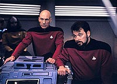
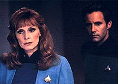
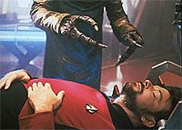
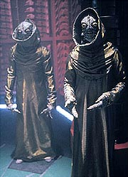

|
MANCHETE
DO EPISDIO
Abdues de relatos ufolgicos no
fazem muito sucesso no sculo 24
Episdio
anterior | Prximo
episdio
Sinopse:
Data Estelar: 46154.2.
A Enterprise est estudando o aglomerado globular Amargosa, um
agrupamento estelar que ocupa uma vasta regio do espao. Para
acelerar o trabalho de mapeamento, Geordi La Forge prope uma mudana
nos sistemas. Com a aprovao de Riker, ele redireciona a energia
do motor de dobra para a grade do defletor principal, e a idia
parece funcionar, aumentando a potncia dos sensores.
 Aps alguns
minutos, entretanto, o plano parece dar errado, quando os sensores
internos da nave indicam a ocorrncia de uma exploso na rea de
Carga. Quando Geordi, Data, Riker, Crusher e Worf correm para
verificar, eles ficam impressionados ao descobrir que na verdade
nada aconteceu. Ao que parece, no houve exploso, apenas uma
falha dos sensores causada pelas modificaes de Geordi.
Enquanto isso, vrios tripulantes comeam a experimentar estranhos
sintomas. Riker luta contra uma exausto cada vez pior, embora
Beverly Crusher no detecte nada de errado com ele. Worf e Geordi
sofrem dores agudas repentinas e ansiedade. At Data experimenta
uma estranha sensao, quando ele parece ter "perdido"
uma hora e meia de sua vida, como se elas tivessem passado
instantaneamente. Geordi percebe que todos que so afetados tiveram
contato com a rea de Carga. Ele ordena uma investigao da causa
e logo descobre uma estranha distoro subespacial naquele
compartimento.
Data e Geordi relatam a Picard que as modificaes feitas pelo
engenheiro nos sistemas atraram um feixe de partculas aliengena
que no pode normalmente existir nesse Universo. Mais tarde, Geordi
se junta a Worf e Riker para falar sobre as estranhas sensaes,
que parecem estar relacionadas a um fator comum a todos eles.
Conversando com Troi, eles percebem que alguma experincia de seu
passado parece estar os afetando. Todos se lembram de uma mesa, fria
e dura.
O grupo vai ao holodeck, na esperana de que possam guiar o
computador a reconstruir suas memrias por estmulos visuais.
Conforme eles vo dando mais e mais detalhes ao computador, vai
surgindo um equipamento que mais parece uma sinistra sala de operaes.
 Data
informa a Picard que um nvel intenso de ttrions est presente
na nave estelar. Ainda mais perturbador, entretanto, a descoberta
do andride de que ele de fato esteve fisicamente ausente da
Enterprise por cerca de 90 minutos. Picard imediatamente pergunta ao
computador se h membros da tripulao desaparecidos --h dois,
sem relatos de onde eles podem ter ido.
O mistrio se intensifica quando Beverly examina Riker e descobre
que seu brao foi amputado e cirurgicamente reimplantado. Geordi e
Data voltam rea de Carga, onde os nveis de ttrions esto
causando uma ruptura espacial. Mas antes que eles possam investigar
mais, Picard e a tripulao descobrem que um dos tripulantes
desaparecidos voltou nave. Eles correm at seus aposentos, onde
o homem, agonizando em dor, morre diante deles. Percebendo que ele
pode ser o prximo, Riker voluntrio para usar um aparelho
sinalizador que ajude a determinar para onde as vtimas esto
sendo levadas.
Mais tarde, Riker se encontra em um laboratrio aliengena similar
ao local recriado no holodeck. A outra tripulante desaparecida,
alferes Rager, est passando por algum tipo de experimento mdico,
obviamente fortemente sedada. Ao mesmo tempo, sobrias criaturas
aliengenas tiram seu aparelho sinalizador e tentam sed-lo, mas
Riker apenas finge estar inconsciente (Crusher havia injetado uma
substncia nele para reagir ao sedativo aliengena).
Enquanto isso, a tripulao da Enterprise usa o aparelho
sinalizador para determinar o paradeiro de Riker. Os aliengenas
criam uma ruptura naquele ambiente, uma que o pessoal da Enterprise
tenta fechar. Conforme os aliengenas tentam compensar pela
atividade da Enterprise, Riker consegue pegar Rager e correr pela
ruptura, levando-o de volta nave. Os dois escapam e a ruptura
fechada, mas ainda h a desconfortvel possibilidade de que essa
fora misteriosa volte a atacar no futuro.
Comentrios:
No importa por
qual ngulo voc olhe, "Schisms" um episdio
horrvel. Se voc f de tecnobaboseira, vai se decepcionar
--ela est presente s toneladas aqui, mas nunca foi to mal
utilizada. Se voc gosta de desenvolvimento de personagens,
desaparea, pois este aqui no vai falar nada sobre ningum. Se
voc gosta de aliengenas interessantes, nem passe perto, pois no
aprendemos absolutamente nada sobre esses aqui. Se voc gosta de
metforas e analogias com o mundo real, esquea --a no ser que
voc considere plausvel que aquela sua noite de sono mal-dormida
fruto de uma abduo por aliengenas.
 Na verdade, tudo se
resume a isso mesmo: uma tradicional histria de abduo por
aliengenas, como nos contada nos filmes e contos contemporneos
baseados em relatos ufolgicos. O problema que, no universo de Jornada,
no basta ser aliengena para ser assustador. E os mtodos
tradicionalmente usados para abdues so simplistas demais para
o povo da Enterprise. Seria preciso elevar a complexidade do
processo de rapto enormemente para tornar a histria vibrante o
suficiente para funcionar nos termos da srie futurista.
O resultado dessa necessidade se traduz em catstrofe no roteiro.
Ao mandar os aliengenas para uma das "n" dimenses do
subespao e permitir que eles arbitrariamente sequestrem os
tripulantes da Enterprise que passaram pela rea de Carga um
remendo capenga para adaptar a histria. Isso porque nunca foi
estabelecido direito o que o "subespao", ou como ele
funciona. Em outras palavras, ele pode funcionar aqui do jeito que o
roteirista quiser. Ou, dizendo mais diretamente, ele a convenincia
de roteiro por excelncia.
Quando as aes e reaes de um episdio so determinadas por
partculas, feixes, distores e anomalias que sequer podemos
imaginar em que princpios se baseiam, perde todo o sentido tentar
acompanhar a histria com o objetivo de entend-la. A audincia
fica margem da "razo" por trs das coisas. Cabe a
ela apenas acompanhar para ver como tudo termina. No existe coisa
mais horrvel que um episdio pode fazer com um telespectador do
que coloc-lo margem do entendimento. Como ele poder antecipar
o prximo movimento, ou ansiar por uma soluo que ele imagina
possvel, se tudo que existe ali so ttrions e anomalias do
subespao?
Outro resultado de submeter o episdio aos caprichos da
tecnobaboseira com o objetivo de alimentar um mistrio sem
fundamento o fato de o roteiro ficar com mais furos do que um
queijo suo. Quer exemplos? Como Data pde ser
"apagado" pelos aliengenas, se eles usavam um sedativo
para esse fim? Como ele pde no se "lembrar" do fato de
ter ficado desligado por 90 minutos? Ou como Data poderia ter sido
arrastado para o ambiente aliengena sem saber, uma vez que ele no
dorme, como os outros? Ou por que Riker no sentia o tempo passar
durante a noite, se ele de fato a gastava dormindo (ainda que
sedado)? H mais, se continuarmos aqui pensando, mas no necessrio.
No fosse s pelo fracasso da premissa do episdio, a execuo
tambm terrvel. O segmento todo conduzido em um ritmo super
arrastado, que culmina com a terrvel sequncia da "reconstruo"
da mesa de cirurgia no holodeck. Quantos minutos no so jogados
fora ali, em algo to pouco empolgante? A "fuga" de Riker
da sala dos aliengenas igualmente pattica, assim como sua
simulao de estar sedado. Sorte que os camaradas no resolveram
amputar a perna dele, ou ele estaria urrando de dor at agora...
 A aparncia
dos aliengenas decepcionante, e suas motivaes so to
pouco claras quanto as dos aliengenas que, dizem as ms lnguas,
curtem picotar gado e depois atirar a carcaa de volta Terra.
As nicas cenas que valem alguma coisa so a do barbeiro Mott com
Worf e a demonstrao de "apreciao" de Riker pela
poesia de Data. Pelo menos so os nicos momentos do episdio em
que a comdia no involuntria. De resto, "Schisms"
uma perda de tempo.
Citaes:
Data - "I
noticed that many spectators seemed distracted during my
presentation. Was my poetry uninteresting?"
("Eu notei que muitos espectadores pareciam distrados durante
minha apreseno. Minha poesia foi desinteressante?")
Geordi - "Well, it was... very well constructed. Virtual
tribute to... form."
("Bem, foi... muito bem construda. Um virtual tributo ...
forma."
Data - "Thank you. ...And?"
("Obrigado. ...E?")
Trivia:
 a quarta vez que Lani Chapman reprisa seu papel de alferes Rager.
Dessa vez a personagem ganhou um primeiro nome, Sariel.
a quarta vez que Lani Chapman reprisa seu papel de alferes Rager.
Dessa vez a personagem ganhou um primeiro nome, Sariel.
Ken
Thorley retorna com seu Boliano Mott nesse episdio. Mott foi
primeiramente visto em "Ensign Ro".
Ficha
tcnica:
Histria de Jean Louise Mattjias
e Ron Wilkerson
Roteiro de Brannon Braga
Direo de Robert Wiemer
Exibido em 19/10/1992
Produo: 131
Elenco:
Patrick Stewart como
Jean-Luc Picard
Jonathan Frakes como William Thomas Riker
Brent Spiner como Data
LeVar Burton como Geordi La Forge
Michael Dorn como Worf
Gates McFadden como Beverly Crusher
Marina Sirtis como Deanna Troi
Elenco convidado:
Majel
Barrett-Roddenberry como a voz do computador
Lanei Chapman como alferes Sariel Rager
Ken Thorley como Mott
Scott T. Trost como tenente Shipley
Angelo McCabe como um tripulante
Angelina Fiordellisi como Kaminer
John Nelson como tcnico-mdico
Episdio
anterior | Prximo
episdio
|